vuota 89% salto – macchie 0 barre 0 A/R 0%
L* 25.0 · dettaglio 0.9 · 7205 ms · centro
vuota 91% salto 0% macchie 0 barre 0 A/R 0%
L* 28.0 · dettaglio 0.9 · 7108 ms · NON PRONTO: immagine non ferma · galassia
vuota 93% salto 0% macchie 0 barre 0 A/R 0%
L* 26.3 · dettaglio 0.8 · 7656 ms · NON PRONTO: immagine non ferma · galassia
vuota 93% salto 0% macchie 0 barre 0 A/R 0%
L* 26.4 · dettaglio 0.9 · 7109 ms · galassia
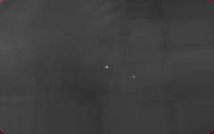
vuota 92% salto 0% macchie 0 barre 0 A/R 0%
L* 26.4 · dettaglio 0.9 · 7940 ms · galassia
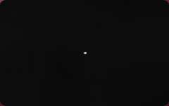
vuota 99% salto 100% macchie 0 barre 0 A/R 0%
L* 3.3 · dettaglio 0.7 · 5148 ms · galassia
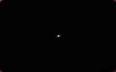
vuota 100% salto 0% macchie 0 barre 0 A/R 0%
L* 0.9 · dettaglio 0.6 · 4408 ms · galassia
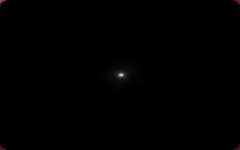
vuota 99% salto 0% macchie 0 barre 0 A/R 0%
L* 0.1 · dettaglio 0.6 · 2397 ms · galassia
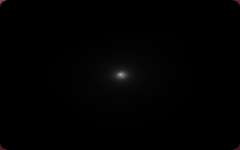
vuota 98% salto 0% macchie 0 barre 0 A/R 0%
L* 0.4 · dettaglio 0.6 · 3291 ms · galassia
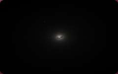
vuota 97% salto 0% macchie 0 barre 0 A/R 0%
L* 1.3 · dettaglio 0.6 · 7268 ms · galassia
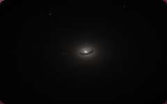
vuota 95% salto 0% macchie 0 barre 0 A/R 1%
L* 2.1 · dettaglio 0.7 · 6649 ms · stella
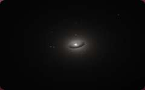
vuota 91% salto 38% macchie 0 barre 0 A/R 49%
L* 3.5 · dettaglio 0.8 · 5545 ms · stella
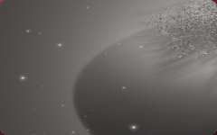
vuota 73% salto 60% macchie 0 barre 0 A/R 26%
L* 41.5 · dettaglio 2.1 · 7361 ms · NON PRONTO: immagine non ferma · stella
vuota 90% salto 0% macchie 0 barre 0 A/R 17%
L* 45.4 · dettaglio 1.1 · 6715 ms · stella
vuota 90% salto 0% macchie 0 barre 0 A/R 18%
L* 45.1 · dettaglio 1.0 · 5816 ms · stella
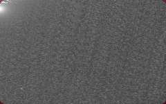
vuota 0% salto 1% macchie 0 barre 0 A/R 7%
L* 38.7 · dettaglio 5.2 · 7767 ms · NON PRONTO: immagine non ferma · stella (perso)
vuota 99% salto 1% macchie 0 barre 0 A/R 1%
L* 42.9 · dettaglio 0.8 · 10617 ms · stella (perso)
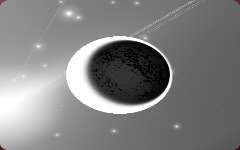
vuota 60% salto – macchie 2 barre 0 A/R 64%
L* 53.1 · dettaglio 5.3 · 19568 ms · NON PRONTO: immagine non ferma · pianeta
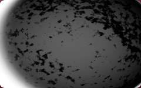
vuota 31% salto 31% macchie 1 barre 0 A/R 37%
L* 28.0 · dettaglio 4.3 · 35129 ms · NON PRONTO: gesto · pianeta
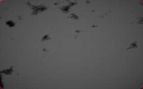
vuota 87% salto 4% macchie 0 barre 2 A/R 3%
L* 34.7 · dettaglio 1.1 · 21861 ms · NON PRONTO: gesto · suolo (centro)
vuota 95% salto 1% macchie 0 barre 0 A/R 0%
L* 36.9 · dettaglio 0.7 · 22233 ms · NON PRONTO: gesto · suolo (centro)
vuota 99% salto 0% macchie 0 barre 0 A/R 0%
L* 38.4 · dettaglio 0.7 · 23768 ms · NON PRONTO: gesto, tessere 4 · suolo (centro)
vuota 100% salto 0% macchie 0 barre 0 A/R 0%
L* 48.8 · dettaglio 0.8 · 21486 ms · NON PRONTO: gesto · suolo (centro)
vuota 100% salto 0% macchie 0 barre 0 A/R 0%
L* 64.6 · dettaglio 1.1 · 20733 ms · NON PRONTO: gesto · suolo (centro)
vuota 100% salto 99% macchie 0 barre 0 A/R 0%
L* 81.9 · dettaglio 1.4 · 25425 ms · NON PRONTO: gesto · suolo (centro)
vuota 100% salto 0% macchie 0 barre 0 A/R 0%
L* 83.9 · dettaglio 1.4 · 15035 ms · NON PRONTO: immagine non ferma · suolo (centro)
vuota 100% salto 0% macchie 0 barre 0 A/R 0%
L* 84.4 · dettaglio 1.4 · 16916 ms · NON PRONTO: immagine non ferma · suolo (centro)

vuota 100% salto 0% macchie 0 barre 0 A/R 0%
L* 84.4 · dettaglio 1.4 · 10020 ms · NON PRONTO: finestre 0+1 · suolo (centro)

vuota 100% salto 0% macchie 0 barre 0 A/R 0%
L* 84.4 · dettaglio 1.4 · 19106 ms · NON PRONTO: finestre 0+1 · suolo (centro)
vuota 49% salto 94% macchie 1 barre 1 A/R 1%
L* 35.3 · dettaglio 1.5 · 18137 ms · NON PRONTO: finestre 0+2 · suolo (centro)
vuota 95% salto 2% macchie 0 barre 0 A/R 2%
L* 23.0 · dettaglio 0.8 · 19477 ms · NON PRONTO: immagine non ferma · suolo (centro)
vuota 98% salto 1% macchie 0 barre 0 A/R 2%
L* 22.5 · dettaglio 0.8 · 3999 ms · suolo (centro)
vuota 98% salto 1% macchie 0 barre 0 A/R 1%
L* 22.3 · dettaglio 0.6 · 1597 ms · suolo (centro)
vuota 99% salto 1% macchie 0 barre 0 A/R 1%
L* 22.0 · dettaglio 0.7 · 1231 ms · suolo (centro)
vuota 99% salto 0% macchie 0 barre 0 A/R 0%
L* 21.9 · dettaglio 0.6 · 1144 ms · suolo (centro)
vuota 99% salto 1% macchie 0 barre 0 A/R 1%
L* 21.9 · dettaglio 0.7 · 2000 ms · suolo (centro)
vuota 99% salto 0% macchie 0 barre 0 A/R 0%
L* 21.9 · dettaglio 0.5 · 957 ms · suolo (centro)
vuota 99% salto 1% macchie 0 barre 0 A/R 1%
L* 22.0 · dettaglio 0.8 · 1049 ms · suolo (centro)
vuota 99% salto 0% macchie 0 barre 0 A/R 100%
L* 21.9 · dettaglio 1.2 · 769 ms · suolo (centro)
vuota 98% salto 1% macchie 0 barre 2 A/R 1%
L* 22.0 · dettaglio 1.2 · 978 ms · suolo (centro)
vuota 99% salto 1% macchie 0 barre 0 A/R 0%
L* 22.1 · dettaglio 0.6 · 764 ms · suolo (centro)
vuota 99% salto 1% macchie 0 barre 0 A/R 99%
L* 21.9 · dettaglio 0.7 · 2339 ms · suolo (centro)
vuota 99% salto 0% macchie 0 barre 0 A/R 100%
L* 21.9 · dettaglio 0.5 · 662 ms · suolo (centro)
vuota 99% salto 1% macchie 0 barre 0 A/R –
L* 22.0 · dettaglio 0.7 · 951 ms · suolo (centro)
vuota 99% salto 0% macchie 0 barre 0 A/R –
L* 21.9 · dettaglio 0.5 · 811 ms · suolo (centro)
vuota 99% salto 1% macchie 0 barre 0 A/R –
L* 21.9 · dettaglio 0.8 · 1086 ms · suolo (centro)
vuota 99% salto 0% macchie 0 barre 0 A/R –
L* 21.9 · dettaglio 0.6 · 927 ms · suolo (centro)
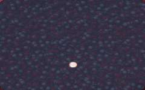
vuota 4% salto 1% macchie 0 barre 0 A/R –
L* 22.1 · dettaglio 3.1 · 9343 ms · NON PRONTO: finestre 0+1 · suolo (centro)
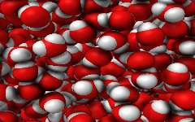
vuota 0% salto 98% macchie 0 barre 0 A/R –
L* 37.8 · dettaglio 10.8 · 10020 ms · NON PRONTO: finestre 1+1 · suolo (centro)
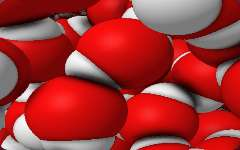
vuota 21% salto 79% macchie 0 barre 0 A/R –
L* 42.6 · dettaglio 7.3 · 9562 ms · NON PRONTO: immagine non ferma · suolo (centro)
vuota 77% salto 51% macchie 0 barre 0 A/R –
L* 43.5 · dettaglio 3.8 · 11623 ms · NON PRONTO: immagine non ferma · suolo (centro)
vuota 97% salto 87% macchie 1 barre 0 A/R –
L* 82.3 · dettaglio 1.5 · 10628 ms · NON PRONTO: finestre 0+1 · suolo (centro)
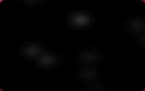
vuota 96% salto 100% macchie 0 barre 0 A/R –
L* 0.7 · dettaglio 0.4 · 11686 ms · suolo (centro)
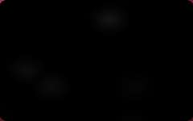
vuota 100% salto 0% macchie 0 barre 0 A/R –
L* 0.2 · dettaglio 0.4 · 6838 ms · NON PRONTO: finestre 1+1 · suolo (centro)
vuota 100% salto 0% macchie 0 barre 0 A/R –
L* 0.2 · dettaglio 0.4 · 6743 ms · NON PRONTO: finestre 0+1 · suolo (centro)
vuota 100% salto 0% macchie 0 barre 0 A/R –
L* 0.2 · dettaglio 0.4 · 7780 ms · NON PRONTO: finestre 0+1 · suolo (centro)
vuota 100% salto 0% macchie 0 barre 0 A/R –
L* 0.2 · dettaglio 0.7 · 8118 ms · NON PRONTO: finestre 1+1 · suolo (centro)
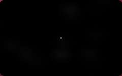
vuota 100% salto 0% macchie 0 barre 0 A/R –
L* 0.3 · dettaglio 0.9 · 11466 ms · suolo (centro)
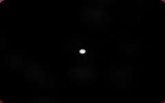
vuota 99% salto 0% macchie 0 barre 0 A/R –
L* 0.4 · dettaglio 0.6 · 7584 ms · NON PRONTO: finestre 1+1 · suolo (centro)
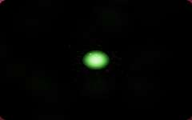
vuota 98% salto 2% macchie 0 barre 0 A/R –
L* 1.4 · dettaglio 0.8 · 8671 ms · NON PRONTO: finestre 0+1 · suolo (centro)
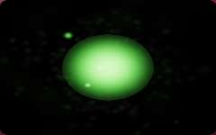
vuota 82% salto 1% macchie 0 barre 15 A/R –
L* 10.0 · dettaglio 1.2 · 9165 ms · NON PRONTO: finestre 0+1 · suolo (centro)
vuota 100% salto 17% macchie 0 barre 0 A/R –
L* 0.0 · dettaglio 0.5 · 8163 ms · NON PRONTO: finestre 0+1 · suolo (centro)

vuota 96% salto 100% macchie 0 barre 6 A/R 0%
L* 93.0 · dettaglio 4.6 · 573 ms · suolo (centro)